| Animations |
Every animation below is Atic Atac running its own code in SkoolKit's simulator, made when these pages were built. Each scene is a game started the way the build starts one for the room pictures -- from the title screen, with the character's key and 0 -- and run until the character has materialised in room $00. Then what the scene needs is put in place at the top of a frame, and said below: the player sent to another room through $9147 (the way the room pictures are drawn, which skips the walk in through a door), a creature made to arrive, an object laid down or put in the inventory, the life force set. After that everything is the game's: its movement, its animation, its drawing. In the scenes that are not about the creatures the spawner's countdown ($5E27) is held up at every frame so that none arrive. All of this is the first game after loading, whose layout -- the keys, the timed doors, where Dracula has got to -- is always the same, because FRAMES does not move on the title screen (see the Map page).
The game draws straight onto the screen, XORing each thing off at its old place and on at its new one a row at a time (REDRAW_MOVED), and it runs at two speeds (MAIN_LOOP): the player, the weapon and the sound move once a 50Hz frame, in FRAME_TICK, which the loop calls between records whenever FRAMES has moved; the creatures, the big monsters, doors and food move once a pass of the loop, about every other frame in a quiet room. So the screen is read at the top of FRAME_TICK, when no record is half drawn, and each picture lasts until the next reading: the T-states between them, counted by the simulator at 3.5MHz with no memory contention (a real Spectrum is a little slower). Identical pictures in a row are one, for their total time; a GIF can only say hundredths, and 20ms at the least. Where the game leaves its loop -- a fall through a trapdoor, the ends of the game -- the screen is read every fiftieth of a second instead. FLASH is drawn in the phase the ULA would be in. Each GIF is cropped to what changed, or shows the room, with the part of the scroll that matters beside it; under each, the sprite frames of the things it follows in each picture and how long it lasted.
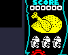
A game just started: START_GAME has called PLACE_PLAYER, which puts the character into the player's record as sprite $66 at $60, $68, fills the life force, and sets a count of 104 frames at $5E3C. While that runs out, MATERIALISING does nothing but FLASH_SCORE: the six cells of the score flash (their FLASH bit set), with a pip every sixteenth frame. Then the figure rises out of the floor, one more row of the character's own picture on each frame in four (FRAMES AND 3), drawn in a colour that changes every four frames; at full height FINISH_MATERIALISING turns it back into the character. Here the flashing lasted 2.6s and the rise 2.1s: more than 104 and 72 fiftieths, because a long pass of the loop can swallow a frame, and FRAME_TICK only counts the ones it sees. Sprite $66 has no picture: the rising figure is drawn with the character's sprite (+$07), which is why the list below shows $66 until the end.
Sprite frames drawn: $08 (GFX_06); and $66, which has no picture of its own (on the Sprites page: $01-$10).
In the picture: $66 x31 (4610ms), $66 / $08 (90ms), $08 x2 (310ms): 34 pictures, 5.0s in all.
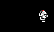
left (Q)
right (W)
up (R)
down (E)
Each direction held on its own in room $00, the knight alone, 24 frames from a frame standing. UPDATE_KNIGHT moves him through MOVE_PLAYER -- two pixels a frame at once, whichever the character -- and, while he is moving, on each frame when FRAMES AND 3 is 0 steps the low two bits of his sprite round the four frames of the heading and calls SOUND_FOOTSTEP for a footstep. The heading is picked by the larger of the two speeds: the first four codes are left, then right, up and down. The step every fourth frame comes out as a picture held four or five frames here, because now and then a frame goes by without a FRAME_TICK.
Sprite frames drawn: $01 (GFX_01), $02 (GFX_02), $03 (GFX_03), $04 (GFX_02), $05 (GFX_05), $06 (GFX_06), $07 (GFX_07), $08 (GFX_06), $09 (GFX_09), $0A (GFX_0A), $0B (GFX_0B), $0C (GFX_0A), $0D (GFX_0D), $0E (GFX_0E), $0F (GFX_0F), $10 (GFX_0E) (on the Sprites page: $01-$10).
Left (q): $08 x4 (90ms), $01 x4 (80ms), $02 x4 (100ms), $03 x6 (130ms), $04 x4 (80ms), $01 x3 (60ms): 25 pictures, 0.5s in all.
Right (w): $08 x4 (90ms), $05 x4 (80ms), $06 x4 (100ms), $07 x6 (130ms), $08 x4 (80ms), $05 x3 (60ms): 25 pictures, 0.5s in all.
Up (r): $08 x4 (80ms), $09 x4 (90ms), $0A x4 (80ms), $0B x6 (130ms), $0C x4 (90ms), $09 x3 (60ms): 25 pictures, 0.5s in all.
Down (e): $08 x4 (80ms), $0D x4 (90ms), $0E x4 (80ms), $0F x6 (130ms), $10 x4 (90ms), $0D x3 (60ms): 25 pictures, 0.5s in all.
left (Q)
right (W)
up (R)
down (E)
Each direction held on its own in room $00, the wizard alone, 24 frames from a frame standing. UPDATE_WIZARD moves him through MOVE_PLAYER -- two pixels a frame at once, whichever the character -- and, while he is moving, on each frame when FRAMES AND 3 is 0 steps the low two bits of his sprite round the four frames of the heading and calls SOUND_FOOTSTEP for a footstep. The heading is picked by the larger of the two speeds: the first four codes are left, then right, up and down. The step every fourth frame comes out as a picture held four or five frames here, because now and then a frame goes by without a FRAME_TICK.
Sprite frames drawn: $11 (GFX_11), $12 (GFX_12), $13 (GFX_13), $14 (GFX_12), $15 (GFX_15), $16 (GFX_16), $17 (GFX_17), $18 (GFX_16), $19 (GFX_19), $1A (GFX_1A), $1B (GFX_1B), $1C (GFX_1A), $1D (GFX_1D), $1E (GFX_1E), $1F (GFX_1F), $20 (GFX_1E) (on the Sprites page: $11-$20).
Left (q): $18 x4 (90ms), $11 x6 (130ms), $12 x4 (90ms), $13 x4 (100ms), $14 x4 (80ms), $11 x3 (60ms): 25 pictures, 0.6s in all.
Right (w): $18 x4 (90ms), $15 x6 (130ms), $16 x4 (90ms), $17 x4 (100ms), $18 x4 (80ms), $15 x3 (60ms): 25 pictures, 0.6s in all.
Up (r): $18 x4 (90ms), $19 x6 (130ms), $1A x4 (90ms), $1B x4 (100ms), $1C x4 (80ms), $19 x3 (60ms): 25 pictures, 0.6s in all.
Down (e): $18 x4 (90ms), $1D x6 (130ms), $1E x4 (80ms), $1F x4 (100ms), $20 x4 (80ms), $1D x3 (60ms): 25 pictures, 0.5s in all.
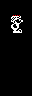
left (Q)
right (W)
up (R)
down (E)
Each direction held on its own in room $00, the serf alone, 24 frames from a frame standing. UPDATE_SERF moves him through MOVE_PLAYER -- two pixels a frame at once, whichever the character -- and, while he is moving, on each frame when FRAMES AND 3 is 0 steps the low two bits of his sprite round the four frames of the heading and calls SOUND_FOOTSTEP for a footstep. The heading is picked by the larger of the two speeds: the first four codes are left, then right, up and down. The step every fourth frame comes out as a picture held four or five frames here, because now and then a frame goes by without a FRAME_TICK.
Sprite frames drawn: $21 (GFX_21), $22 (GFX_22), $23 (GFX_23), $24 (GFX_22), $25 (GFX_25), $26 (GFX_26), $27 (GFX_27), $28 (GFX_26), $29 (GFX_29), $2A (GFX_2A), $2B (GFX_2B), $2C (GFX_2A), $2D (GFX_2D), $2E (GFX_2E), $2F (GFX_2F), $30 (GFX_2E) (on the Sprites page: $21-$30).
Left (q): $28 x4 (90ms), $21 x4 (80ms), $22 x4 (100ms), $23 x6 (130ms), $24 x4 (80ms), $21 x3 (60ms): 25 pictures, 0.5s in all.
Right (w): $28 x4 (90ms), $25 x4 (80ms), $26 x4 (100ms), $27 x6 (130ms), $28 x4 (80ms), $25 x3 (60ms): 25 pictures, 0.5s in all.
Up (r): $28 x4 (80ms), $29 x4 (90ms), $2A x4 (80ms), $2B x6 (130ms), $2C x4 (90ms), $29 x3 (60ms): 25 pictures, 0.5s in all.
Down (e): $28 x4 (80ms), $2D x4 (90ms), $2E x4 (80ms), $2F x6 (130ms), $30 x4 (90ms), $2D x3 (60ms): 25 pictures, 0.5s in all.
knight
wizard
serf
W held for 12 frames in room $00, then nothing, for each character in turn. The heading at +$06 reaches 32 -- two pixels a frame -- in one frame of holding a key; let go, DECAY_HEADING takes the character's own amount off it each frame (the knight 3, the wizard 32, the serf 1), and a heading of 16 to 31 is still a pixel a frame (SCALE_SIGNED divides by sixteen). So the wizard stops dead, and the others slide on: measured here, the knight 5 pixels in 5 frames, the wizard 0, the serf 16 in 16. The walking frame keeps turning over while he slides, since the heading is not yet zero.
Sprite frames drawn: $05 (GFX_05), $06 (GFX_06), $07 (GFX_07), $08 (GFX_06), $15 (GFX_15), $16 (GFX_16), $18 (GFX_16), $25 (GFX_25), $26 (GFX_26), $27 (GFX_27), $28 (GFX_26) (on the Sprites page: $01-$10, $11-$20, $21-$30).
Knight: $08 x4 (90ms), $05 x4 (80ms), $06 x4 (100ms), $07 x6 (130ms), $08 (80ms), $05 (410ms): 20 pictures, 0.9s in all.
Wizard: $18 x4 (90ms), $15 x6 (130ms), $16 x3 (660ms): 13 pictures, 0.9s in all.
Serf: $28 x4 (90ms), $25 x4 (80ms), $26 x4 (100ms), $27 x6 (140ms), $28 x4 (100ms), $25 x4 (90ms), $26 x3 (80ms), $27 (90ms), $28 (70ms), $25 (80ms), $26 (20ms): 33 pictures, 0.9s in all.
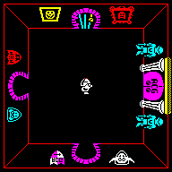
W, R and T together for one frame in the middle of room $00 -- right, up and fire -- then nothing. KNIGHT_FIRE fires only when the weapon slot ($EA98) is empty and the knight is not in a doorway; it plays SOUND_SWEEP_A41B, and FIRE_WEAPON gives the weapon four pixels a frame on each axis the heading has, and 48 frames to live. SPIN_AXE takes the axe's frame from FRAMES -- NOT FRAMES, halved, AND 7 -- so it turns through its eight angles, a new one every other frame, and draws it red. All three then go through $8209: a bounce off the room's walk rectangle turns the velocity round with SOUND_BOUNCE's click, and when the time is up it is rubbed out with SOUND_WEAPON_GONE. Here it flew for 0.9s and bounced 4 times.
Sprite frames drawn: $40 (GFX_40), $41 (GFX_41), $42 (GFX_42), $43 (GFX_43), $44 (GFX_44), $45 (GFX_45), $46 (GFX_46), $47 (GFX_47) (on the Sprites page: $40-$47).
In the picture: - (40ms), $45 (20ms), $44 x2 (40ms), $43 x2 (40ms), $42 x2 (40ms), $41 x2 (50ms), $40 x2 (40ms), $47 x2 (40ms), $46 (20ms), ..., $45 x2 (40ms), $44 x2 (50ms), $43 x2 (40ms), $42 x2 (40ms), $41 x2 (40ms), $40 x2 (40ms), $47 x2 (40ms), - (80ms): 49 pictures, 1.1s in all.
W, R and T together for one frame in the middle of room $00 -- right, up and fire -- then nothing. WIZARD_FIRE fires only when the weapon slot ($EA98) is empty and the wizard is not in a doorway; it plays SOUND_SWEEP_DOWN, and FIRE_WEAPON gives the weapon four pixels a frame on each axis the heading has, and 48 frames to live. SPIN_SPELL steps the spell on to its next frame every frame, round four, and swaps its colour between cyan and white every frame too. All three then go through $8209: a bounce off the room's walk rectangle turns the velocity round with SOUND_BOUNCE's click, and when the time is up it is rubbed out with SOUND_WEAPON_GONE. Here it flew for 1.0s and bounced 4 times.
Sprite frames drawn: $34 (GFX_34), $35 (GFX_35), $36 (GFX_35), $37 (GFX_37) (on the Sprites page: $34-$37).
In the picture: - (40ms), $35 (30ms), $36 (40ms), $37 (20ms), $34 (20ms), $35 (20ms), $36 (20ms), $37 (30ms), $34 (30ms), ..., $35 (20ms), $36 (20ms), $37 (20ms), $34 (20ms), $35 (20ms), $36 (30ms), $37 (40ms), - (70ms): 49 pictures, 1.2s in all.
W, R and T together for one frame in the middle of room $00 -- right, up and fire -- then nothing. SERF_FIRE fires only when the weapon slot ($EA98) is empty and the serf is not in a doorway; it plays SOUND_SWEEP_UP, and FIRE_WEAPON gives the weapon four pixels a frame on each axis the heading has, and 48 frames to live. AIM_SWORD draws the sword yellow at whichever of eight angles matches its velocity (SIGN_TO_DIRECTION), so it changes only when it bounces: it does not spin, whatever its sprites' name says. All three then go through $8209: a bounce off the room's walk rectangle turns the velocity round with SOUND_BOUNCE's click, and when the time is up it is rubbed out with SOUND_WEAPON_GONE. Here it flew for 1.0s and bounced 4 times.
Sprite frames drawn: $39 (GFX_39), $3B (GFX_3B), $3D (GFX_3D), $3F (GFX_3F) (on the Sprites page: $38-$3F).
In the picture: - (40ms), $3D x14 (360ms), $3B (20ms), $3F x27 (640ms), $39 x2 (40ms), $3D x3 (60ms), - (80ms): 49 pictures, 1.2s in all.
Small creatures are not kept anywhere in the castle: SPAWN_MONSTER_INTO_ROOM puts them into the player's room, three at most, the first 32 frames after he arrives and then at random. A new one takes the first free of the three slots at $EE60, a copy of MONSTER_TEMPLATE with the player's room, a kind from the sixteen entries of SPAWN_TYPES picked by FRAMES, a random place and a random speed. For its first 32 passes it is the arrival, sprites $58-$5B counting down (SPAWN_MONSTER); then it becomes its kind, and most kinds animate by flipping bit 0 of the sprite. They bounce off the room's walk rectangle ($84CD), ignore doors and furniture, and die the moment they touch the player or the weapon (below). Each kind here was made to arrive in room $00 with the knight standing in a corner -- the spawner's countdown at $5E27 set to 1 and FRAMES to a value whose low nibble picks this creature from the table; the slot, the random place and speed are the spawner's own -- and followed for about four seconds.
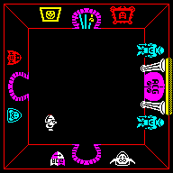
Sprite $5C, 2 in 16 of the spawns; moved by MOVE_ACTOR. The arrival lasted 1.1s. Here it found the knight in his corner, touched him and burst. How it moves (read from MOVE_ACTOR): a random pair of direction bits every 16 passes, the speed eased a step a pass towards two pixels.
Sprite frames drawn: $58 (GFX_58), $59 (GFX_59), $5A (GFX_5A), $5B (GFX_5B), $5C (GFX_5C), $5D (GFX_5D), $6C (GFX_6C), $6D (GFX_6D), $6E (GFX_6E), $6F (GFX_6F) (on the Sprites page: $58-$5B, $5C-$5D, $6C-$6F).
In the picture: - (20ms), $5B (40ms), $5A (40ms), $59 (40ms), $58 (50ms), $5B (40ms), $5A (20ms), $59 (40ms), $58 (50ms), ..., $6C x2 (40ms), $6F x2 (50ms), $6E x2 (40ms), $6D (20ms), $6C x2 (40ms), $6F x2 (50ms), $6E x2 (50ms), $6D (20ms): 145 pictures, 4.7s in all.
Sprite $5E, 2 in 16 of the spawns; moved by MOVE_HOPPER. The arrival lasted 1.1s. How it moves (read from MOVE_HOPPER): a counter from -7 to 7 halved into its vertical speed, and a new random speed each time it tops out: it hops.
Sprite frames drawn: $58 (GFX_58), $59 (GFX_59), $5A (GFX_5A), $5B (GFX_5B), $5E (GFX_5E), $5F (GFX_5F) (on the Sprites page: $58-$5B, $5E-$5F).
In the picture: - (20ms), $5B (40ms), $5A (40ms), $59 (40ms), $58 (50ms), $5B (40ms), $5A (20ms), $59 (40ms), $58 (50ms), ..., $5F (40ms), $5E (50ms), $5F x2 (60ms), $5E x2 (80ms), $5F x2 (90ms), $5E x2 (60ms), $5F x2 (90ms), $5E x2 (60ms): 128 pictures, 4.7s in all.
Sprite $98, 2 in 16 of the spawns; moved by MOVE_FACING_FLYER. The arrival lasted 1.1s. How it moves (read from MOVE_FACING_FLYER): a new random speed every 32 passes with the vertical part halved, and a picture that faces the way it flies.
Sprite frames drawn: $58 (GFX_58), $59 (GFX_59), $5A (GFX_5A), $5B (GFX_5B), $98 (GFX_98), $99 (GFX_99), $9A (GFX_9A), $9B (GFX_9B) (on the Sprites page: $58-$5B, $98-$9B).
In the picture: - (20ms), $5B (40ms), $5A (40ms), $59 (40ms), $58 (50ms), $5B (40ms), $5A (20ms), $59 (40ms), $58 (50ms), ..., $9A (20ms), $98 (40ms), $99 x2 (90ms), $98 x2 (60ms), $99 x2 (80ms), $98 x2 (90ms), $99 x2 (60ms), $9A x2 (60ms): 130 pictures, 4.7s in all.
Sprite $90, 2 in 16 of the spawns; moved by MOVE_WITCH. The arrival lasted 1.1s. How it moves (read from MOVE_WITCH): a new random speed every 16 passes with the vertical part halved, and a picture that faces the way it flies.
Sprite frames drawn: $58 (GFX_58), $59 (GFX_59), $5A (GFX_5A), $5B (GFX_5B), $90 (GFX_90), $91 (GFX_91), $92 (GFX_92), $93 (GFX_93) (on the Sprites page: $58-$5B, $90-$93).
In the picture: - (20ms), $5B (40ms), $5A (40ms), $59 (40ms), $58 (50ms), $5B (40ms), $5A (20ms), $59 (40ms), $58 (50ms), ..., $93 x2 (60ms), $92 x2 (80ms), $93 x2 (80ms), $92 x2 (90ms), $93 x2 (60ms), $92 x2 (80ms), $93 x2 (80ms), $92 (20ms): 135 pictures, 4.6s in all.
Sprite $94, 2 in 16 of the spawns; moved by MOVE_FACING_FLYER. The arrival lasted 1.1s. How it moves (read from MOVE_FACING_FLYER): a new random speed every 32 passes with the vertical part halved, and a picture that faces the way it flies.
Sprite frames drawn: $58 (GFX_58), $59 (GFX_59), $5A (GFX_5A), $5B (GFX_5B), $94 (GFX_94), $95 (GFX_95), $96 (GFX_96), $97 (GFX_97) (on the Sprites page: $58-$5B, $94-$97).
In the picture: - (20ms), $5B (40ms), $5A (40ms), $59 (40ms), $58 (50ms), $5B (40ms), $5A (20ms), $59 (40ms), $58 (50ms), ..., $95 x2 (90ms), $94 (20ms), $96 (40ms), $97 x2 (80ms), $96 x2 (90ms), $97 x2 (60ms), $96 x2 (80ms), $97 x2 (80ms): 136 pictures, 4.7s in all.
Sprite $60, 1 in 16 of the spawns; moved by MOVE_FACE. The arrival lasted 1.1s. How it moves (read from MOVE_FACE): a new random speed every 17 passes.
Sprite frames drawn: $58 (GFX_58), $59 (GFX_59), $5A (GFX_5A), $5B (GFX_5B), $60 (GFX_60), $61 (GFX_61) (on the Sprites page: $58-$5B, $60-$61).
In the picture: - (20ms), $5B (40ms), $5A (40ms), $59 (40ms), $58 (50ms), $5B (40ms), $5A (20ms), $59 (40ms), $58 (50ms), ..., $61 x2 (60ms), $60 x3 (110ms), $61 x2 (90ms), $60 x2 (60ms), $61 x2 (90ms), $60 x2 (60ms), $61 x2 (90ms), $60 (20ms): 129 pictures, 4.8s in all.
Sprite $62, 1 in 16 of the spawns; moved by MOVE_GHOST. The arrival lasted 1.1s. How it moves (read from MOVE_GHOST): the same as the pumpkin's but every 8 passes.
Sprite frames drawn: $58 (GFX_58), $59 (GFX_59), $5A (GFX_5A), $5B (GFX_5B), $62 (GFX_62), $63 (GFX_63) (on the Sprites page: $58-$5B, $62-$63).
In the picture: - (20ms), $5B (40ms), $5A (40ms), $59 (40ms), $58 (50ms), $5B (40ms), $5A (20ms), $59 (40ms), $58 (50ms), ..., $63 x2 (60ms), $62 (80ms), $63 x2 (80ms), $62 x2 (90ms), $63 x2 (60ms), $62 x2 (80ms), $63 x4 (90ms), $62 x2 (60ms): 140 pictures, 4.6s in all.
Sprite $4C, 1 in 16 of the spawns; moved by MOVE_ACTOR. The arrival lasted 1.1s. How it moves (read from MOVE_ACTOR): a random pair of direction bits every 16 passes, the speed eased a step a pass towards two pixels.
Sprite frames drawn: $4C (GFX_4C), $4D (GFX_4D), $58 (GFX_58), $59 (GFX_59), $5A (GFX_5A), $5B (GFX_5B) (on the Sprites page: $4C-$4D, $58-$5B).
In the picture: - (20ms), $5B (40ms), $5A (40ms), $59 (40ms), $58 (50ms), $5B (40ms), $5A (20ms), $59 (40ms), $58 (50ms), ..., $4D x2 (80ms), $4C x2 (60ms), $4D x2 (80ms), $4C x2 (90ms), $4D x2 (60ms), $4C x2 (80ms), $4D x2 (90ms), $4C x2 (60ms): 124 pictures, 4.6s in all.
Sprite $4E, 1 in 16 of the spawns; moved by MOVE_BAT. The arrival lasted 1.1s. How it moves (read from MOVE_BAT): a new random speed, one or two pixels each way, every 256 passes.
Sprite frames drawn: $4E (GFX_4E), $4F (GFX_4F), $58 (GFX_58), $59 (GFX_59), $5A (GFX_5A), $5B (GFX_5B) (on the Sprites page: $4E-$4F, $58-$5B).
In the picture: - (20ms), $5B (40ms), $5A (40ms), $59 (40ms), $58 (50ms), $5B (40ms), $5A (20ms), $59 (40ms), $58 (50ms), ..., $4E x4 (150ms), $4F x4 (150ms), $4E x4 (150ms), $4F x4 (150ms), $4E x4 (150ms), $4F x4 (150ms), $4E x4 (150ms), $4F x3 (100ms): 129 pictures, 4.8s in all.
Sprite $68, 1 in 16 of the spawns; moved by MOVE_HOPPER. The arrival lasted 1.1s. How it moves (read from MOVE_HOPPER): a counter from -7 to 7 halved into its vertical speed, and a new random speed each time it tops out: it hops.
Sprite frames drawn: $58 (GFX_58), $59 (GFX_59), $5A (GFX_5A), $5B (GFX_5B), $68 (GFX_68), $69 (GFX_69) (on the Sprites page: $58-$5B, $68-$69).
In the picture: - (20ms), $5B (40ms), $5A (40ms), $59 (40ms), $58 (50ms), $5B (40ms), $5A (20ms), $59 (40ms), $58 (50ms), ..., $68 (40ms), $69 x2 (90ms), $68 x2 (60ms), $69 x2 (90ms), $68 x2 (60ms), $69 x2 (80ms), $68 x2 (90ms), $69 (20ms): 129 pictures, 4.7s in all.
Sprite $6A, 1 in 16 of the spawns; moved by MOVE_ARCS. The arrival lasted 1.1s. Here it found the knight in his corner, touched him and burst. How it moves (read from MOVE_ARCS): every 16 passes a random direction, then sixteen steps from STEP_VECTORS that swing from across to up and down: it flies in arcs.
Sprite frames drawn: $58 (GFX_58), $59 (GFX_59), $5A (GFX_5A), $5B (GFX_5B), $6A (GFX_6A), $6B (GFX_6B), $6C (GFX_6C), $6D (GFX_6D), $6E (GFX_6E), $6F (GFX_6F) (on the Sprites page: $58-$5B, $6A-$6B, $6C-$6F).
In the picture: - (20ms), $5B (40ms), $5A (40ms), $59 (40ms), $58 (50ms), $5B (40ms), $5A (20ms), $59 (40ms), $58 (50ms), ..., $6F (20ms), $6E x2 (40ms), $6D x2 (50ms), $6C (20ms), $6F x2 (40ms), $6E x2 (50ms), $6D x2 (40ms), - x2 (80ms): 142 pictures, 4.7s in all.
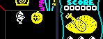
A pumpkin made to arrive in room $00, and once it had, the knight put 24 pixels to its left, level with it (the nearest of a few distances tried from which the axe hit), firing right. Every small creature's mover calls CHECK_SHOT_HIT, a box twelve pixels each way round the weapon: a hit sets the weapon's hit flag, which ends its flight at the next frame, and jumps to $875F. That rubs the creature out, makes it sprite $6C with a count of 16, adds 155 to the score (ADD_SCORE) and draws it; COUNTDOWN_ACTOR then counts down once a pass, showing $6C + (count AND 3), and at 0 rubs it out with SOUND_WEAPON_GONE's sound and frees the slot. The score here went from 0 to 155. The burst is the same whatever was shot.
Sprite frames drawn: $41 (GFX_41), $42 (GFX_42), $43 (GFX_43), $4D (GFX_4D), $6C (GFX_6C), $6D (GFX_6D), $6E (GFX_6E), $6F (GFX_6F) (on the Sprites page: $40-$47, $4C-$4D, $6C-$6F).
In the picture: $4D (40ms), $43+$4D (20ms), $42+$4D x2 (60ms), $41+$6C (40ms), $6F x2 (60ms), $6E x2 (50ms), $6D (20ms), $6C x2 (40ms), $6F x2 (40ms), ..., $6F x2 (50ms), $6E x2 (50ms), $6D (20ms), $6C x2 (40ms), $6F x2 (40ms), $6E x2 (40ms), $6D x2 (40ms), - x2 (220ms): 35 pictures, 1.0s in all.
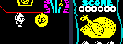
The same pumpkin, and the knight put a little to its left and walking into it. Every small creature's mover also calls CHECK_HIT, the same twelve-pixel box round the player; a touch jumps to MONSTER_CAUGHT_PLAYER, which takes 32 off the life force (LOSE_FOOD_THIRTY_TWO) and then -- like a shot -- kills the creature with $875F, for 155 points. The life force went from 235 to 201 here (the drops were 32, 1, 1: the touch, and the ordinary drain), and the score from 0 to 155. The roast on the scroll is redrawn a row shorter for each eighth gone (DRAW_FOOD).
Sprite frames drawn: $4C (GFX_4C), $4D (GFX_4D), $6C (GFX_6C), $6D (GFX_6D), $6E (GFX_6E), $6F (GFX_6F) (on the Sprites page: $4C-$4D, $6C-$6F).
In the picture: $08+$4D x3 (80ms), $08+$4C (20ms), $05+$4C x4 (90ms), $06+$4C (30ms), $06+$4D x2 (50ms), $06+$6C (30ms), $07+$6F x2 (70ms), $07+$6E (40ms), $07+$6D (40ms), ..., $05+$6F x2 (50ms), $05+$6E (20ms), $05+$6D x2 (40ms), $05+$6C x2 (40ms), $05+$6F x2 (40ms), $05+$6E x2 (40ms), $05+$6D x2 (40ms), $05 x2 (220ms): 42 pictures, 1.2s in all.
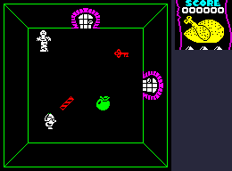
The knight put in the corner of room $85, where the monster was at that moment. The big five are dispatched every pass wherever they are (MAIN_LOOP_MONSTERS); MOVE_MUMMY moves this one a pixel a pass on each axis towards a target (HOME_IN) and shows the next of its four frames every four passes (TICKS divided by four, AND 3). None of them can be shot. While the red key is in its room it walks back and forth between two points, ($68, $38) and ($8C, $68), and does not chase the player (though touching it still costs 8 a pass); once the key has gone it hunts him for the rest of the game.
Sprite frames drawn: $70 (GFX_70), $71 (GFX_71), $72 (GFX_72), $73 (GFX_71) (on the Sprites page: $70-$73).
In the picture: $73 (40ms), $70 x4 (120ms), $71 x4 (100ms), $72 x4 (120ms), $73 x4 (100ms), $70 x4 (100ms), $71 x4 (120ms), $72 x4 (100ms), $73 x4 (100ms), ..., $71 x5 (100ms), $72 x6 (120ms), $73 x5 (100ms), $70 x5 (100ms), $71 x6 (120ms), $72 x5 (100ms), $73 x6 (130ms), $70 (20ms): 281 pictures, 6.5s in all.
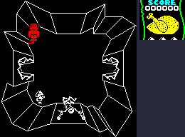
The knight put in the corner of room $55, where the monster was at that moment. The big five are dispatched every pass wherever they are (MAIN_LOOP_MONSTERS); MOVE_FRANKENSTEIN moves this one a pixel a pass on each axis towards a target (HOME_IN) and shows the next of its four frames every four passes (TICKS divided by four, AND 3). None of them can be shot. It hunts the player. Once it reached him the life force went down by 8, 8, 8, 8, 9, 8, 8 -- 8 a pass in contact, plus the ordinary drain -- and the GIF stops twenty frames into that.
Sprite frames drawn: $74 (GFX_74), $75 (GFX_75), $76 (GFX_76), $77 (GFX_75) (on the Sprites page: $74-$77).
In the picture: $77 x3 (60ms), $74 x4 (120ms), $75 x4 (100ms), $76 x4 (120ms), $77 x4 (100ms), $74 x4 (100ms), $75 x4 (100ms), $76 x4 (120ms), $77 x4 (100ms), ..., $75 x4 (120ms), $76 x4 (100ms), $77 x4 (100ms), $74 x4 (100ms), $75 x5 (120ms), $76 x5 (100ms), $77 x8 (220ms), $74 x6 (180ms): 95 pictures, 2.5s in all.
The same, with the spanner ($8B) in the knight's first inventory slot. When the monster touches him, MOVE_FRANKENSTEIN finds the spanner (FIND_CARRIED), adds 1000 to the score and kills it with $875F -- 155 more, and the same burst as a small creature. Its slot is never filled again. The score went from 0 to 1155; the life force lost nothing to it.
Sprite frames drawn: $6C (GFX_6C), $6D (GFX_6D), $6E (GFX_6E), $6F (GFX_6F), $74 (GFX_74), $75 (GFX_75), $76 (GFX_76), $77 (GFX_75) (on the Sprites page: $6C-$6F, $74-$77).
In the picture: $77 x3 (60ms), $74 x4 (120ms), $75 x4 (100ms), $76 x4 (120ms), $77 x4 (100ms), $74 x4 (100ms), $75 x4 (100ms), $76 x4 (120ms), $77 x4 (100ms), ..., $6F (20ms), $6E (20ms), $6D (20ms), $6C (20ms), $6F x2 (40ms), $6E (20ms), $6D (20ms), - x2 (160ms): 106 pictures, 2.7s in all.
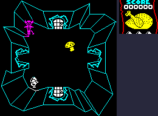
The knight put in the corner of room $43, where the monster was at that moment. The big five are dispatched every pass wherever they are (MAIN_LOOP_MONSTERS); MOVE_DEVIL moves this one a pixel a pass on each axis towards a target (HOME_IN) and shows the next of its four frames every four passes (TICKS divided by four, AND 3). None of them can be shot. It hunts the player, and nothing in the code stops it. Once it reached him the life force went down by 8, 8, 8, 8, 9, 8, 8 -- 8 a pass in contact, plus the ordinary drain -- and the GIF stops twenty frames into that.
Sprite frames drawn: $78 (GFX_78), $79 (GFX_79), $7A (GFX_7A), $7B (GFX_79) (on the Sprites page: $78-$7B).
In the picture: $7B x2 (60ms), $78 x5 (120ms), $79 x5 (120ms), $7A x4 (100ms), $7B x5 (120ms), $78 x4 (100ms), $79 x4 (120ms), $7A x4 (100ms), $7B x4 (120ms), ..., $79 x4 (120ms), $7A x5 (100ms), $7B x4 (120ms), $78 x4 (120ms), $79 x4 (100ms), $7A x6 (120ms), $7B x9 (240ms), $78 x5 (160ms): 100 pictures, 2.6s in all.
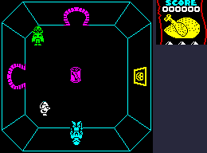
The knight put in the corner of room $07, where the monster was at that moment. The big five are dispatched every pass wherever they are (MAIN_LOOP_MONSTERS); MOVE_DRACULA moves this one a pixel a pass on each axis towards a target (HOME_IN) and shows the next of its four frames every four passes (TICKS divided by four, AND 3). None of them can be shot. In the player's room he hunts; elsewhere he wanders the castle, now and then moving to a random square, cave or octagonal room (he was in room $07 by this point of the game, not the $6D LOAD_INITIAL_STATE starts him in). Once it reached him the life force went down by 8, 8, 8, 8, 9, 8, 8 -- 8 a pass in contact, plus the ordinary drain -- and the GIF stops twenty frames into that.
Sprite frames drawn: $7C (GFX_7C), $7D (GFX_7D), $7E (GFX_7E), $7F (GFX_7D) (on the Sprites page: $7C-$7F).
In the picture: $7F x2 (60ms), $7C x4 (120ms), $7D x4 (120ms), $7E x4 (100ms), $7F x4 (120ms), $7C x4 (100ms), $7D x4 (100ms), $7E x4 (120ms), $7F x4 (100ms), ..., $7D x4 (120ms), $7E x4 (100ms), $7F x4 (120ms), $7C x4 (100ms), $7D x4 (100ms), $7E x6 (120ms), $7F x8 (240ms), $7C x5 (160ms): 93 pictures, 2.5s in all.
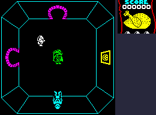
The same, with the crucifix ($8A) in the knight's first inventory slot: MOVE_DRACULA finds it (FIND_CARRIED) and turns his velocity round. Dracula was moved to the middle of the room and the knight put a little way off; Dracula backs away a pixel a pass until the walls stop him, and stays there.
Sprite frames drawn: $7C (GFX_7C), $7D (GFX_7D), $7E (GFX_7E), $7F (GFX_7D) (on the Sprites page: $7C-$7F).
In the picture: $7F x4 (80ms), $7C x6 (120ms), $7D x6 (120ms), $7E x6 (120ms), $7F x6 (120ms), $7C x6 (120ms), $7D x4 (120ms), $7E x4 (120ms), $7F x4 (120ms), ..., $7D (120ms), $7E (120ms), $7F (130ms), $7C (120ms), $7D (120ms), $7E (140ms), $7F x2 (100ms), $7C (60ms): 76 pictures, 3.0s in all.
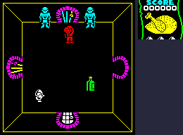
The knight put in the corner of room $56, where the monster was at that moment. The big five are dispatched every pass wherever they are (MAIN_LOOP_MONSTERS); MOVE_HUMPBACK moves this one a pixel a pass on each axis towards a target (HOME_IN) and shows the next of its four frames every four passes (TICKS divided by four, AND 3). None of them can be shot. It stands still unless one of the eight objects $82-$89 is in its room; here $82 (GFX_82) was put down in its room, and it walked to it and took it -- the record emptied, the object gone for the game (SCAN_COLLECTABLES finds it). Then it stood still again, not animating, since only its walking turns the frames over. Its touch costs 16 a pass.
Sprite frames drawn: $9C (GFX_9C), $9D (GFX_9D), $9E (GFX_9E), $9F (GFX_9D) (on the Sprites page: $9C-$9F).
In the picture: $9F+$82 x3 (90ms), $9C+$82 x4 (120ms), $9D+$82 x4 (120ms), $9E+$82 x4 (120ms), $9F+$82 x4 (130ms), $9C+$82 x4 (120ms), $9D+$82 x4 (120ms), $9E+$82 x4 (130ms), $9F+$82 x4 (110ms), ..., $9E+$82 x4 (120ms), $9F+$82 x4 (120ms), $9C+$82 x5 (130ms), $9D+$82 x6 (120ms), $9E+$82 x5 (120ms), $9F+$82 x6 (130ms), $9C+$82 x5 (100ms), $9C x2 (1240ms): 80 pictures, 3.4s in all.
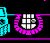
Room $13 has one timed door (at $50, $B7), the knight standing in the middle. At the start of the game CHOOSE_TIMED_DOORS turned about half the ordinary doors into these. The handlers (TIMED_DOOR_SHUT shut, TIMED_DOOR_OPEN open) count one shared countdown, $5E2E, down on every other pass; the door that finds it at 0 reloads it with 94 and $9193 swaps it -- rubs its picture out, flips bit 0 of the type on both halves, shuts or opens it and draws it again -- with SOUND_NOISE_BURST's rasp. With one timed door in the room that is every 190 passes -- the countdown's 94 and the pass that finds it at 0, on even passes only; here the waits were 4.7s (190 passes) and 4.7s (190 passes). Those waits are cut to a second in the GIF; the list below gives the cut pictures as they were shown.
In the picture: $20 (1000ms), $21 (1000ms), $20 (1000ms), $21 (210ms): 4 pictures, 3.2s in all.
Room $29, whose one trapdoor is at $50, $80, with the knight in the far corner. An open trapdoor's handler (TRAPDOOR_CLOSED's other half, from $91C5) shuts it on a pass when the low byte of $5E05 -- a running sum of FRAMES and TICKS -- is zero; a shut one (TRAPDOOR_CLOSED) opens again on a pass when the low byte of TICKS is zero, every 256 passes. Each change XORs the old picture off and the other on, with the rasp. Here it shut after 2.5s and opened 0.7s later; waits longer than a second are cut to one in the GIF. The yellow left at its middle after it opens is the game's: compared with the screen before it shut, every pixel is back as it was, but the four middle colour cells keep the grille's yellow -- presumably because the open picture's colour table has $00, leave the cell alone, there (not checked against the table).
In the picture: $19 (1000ms), $18 (710ms), $19 (220ms): 3 pictures, 1.9s in all.
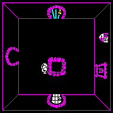
The knight put beside the same trapdoor, open, and walking onto it. TRAPDOOR_FALL tests a box 24 by 12 at the trapdoor's corner; with him on it, it clears the room, draws picture $96 -- twelve nested rectangles -- and for 128 frames plays a falling tone, turning the middle four colour cells white one frame in eight and black otherwise, and flooding that colour outwards round a spiral ($9774), so the rectangles seem to rush past. It lasted 3.2s here. Then it goes through ENTER_ROOM by the trapdoor's other half: room $09 below, where he walks in on his own for fifteen frames. The screen was read every fiftieth of a second through all this, since the game is out of its loop, and so shows the clearing half done.
In the picture: $08 (20ms), $05 x4 (80ms), $06 x159 (3630ms), $0F x4 (100ms), $10 x4 (90ms), $0D x4 (80ms), $0E x4 (80ms), $0F x4 (90ms), $10 (380ms): 185 pictures, 4.5s in all.
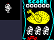
The knight in the middle of room $00 with one unit of life force left. The ordinary drain in $8E78 takes it and jumps to LOSE_LIFE: a life gone (lives 3 to 2), the character's code and height kept in +$07 and +$06, and the sprite $67. DYING lowers him a row on three frames in four and on the fourth only changes his colour; at the bottom DROP_GRAVESTONE leaves a gravestone ($8F) in the first free of four slots, and PLACE_PLAYER starts the next life in the same place, exactly as a game starts (above). Measured here: sinking 0.6s, the score flashing 2.6s, rising 1.9s. The new life rises through the gravestone, and the two clash in colour.
Sprite frames drawn: $08 (GFX_06); and $66, $67, which has no picture of its own (on the Sprites page: $01-$10).
In the picture: $08 / $67 (70ms), $67 x21 (630ms), $66 x58 (4510ms), $66 / $08 (40ms), $08 x15 (330ms): 96 pictures, 5.6s in all.
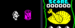
A piece of food (sprite $50) in room $27, the knight put three cells to its left with the life force set to 96, and walking into it. EAT_FOOD runs every pass for each piece in the room; within twelve pixels (NEAR_PLAYER) it rubs the food out, empties its record, starts the eating sound (PLAY_SOUND_EATING) and adds 64, capped at 240. The life force went from 96 to 158 (the other change is the ordinary drain), and DRAW_FOOD redrew the roast 8 eighths taller. The slot fills again much later, with a random kind, when REGROW_FOOD comes round to it with the player elsewhere.
Sprite frames drawn: $50 (GFX_50) (on the Sprites page: $50-$57).
In the picture: $08+$50 (40ms), $05+$50 x4 (80ms), $06+$50 x2 (40ms), $06 x2 (40ms), $07 x4 (80ms), $08 (80ms), $05 (320ms): 15 pictures, 0.7s in all.
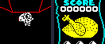
The knight put on a mushroom in room $50, the life force at 239, and left there. MUSHROOM takes a unit a pass while he is within twelve pixels (MUSHROOM_DRAIN), with a sound, and cycles its own colour every fourth pass; DRAW_FOOD takes a row off the top of the roast on the scroll -- the whole roast picture drawn over the picked bones -- for each eighth of the life force gone. He was dead after 11.2s; the mushroom, its work done, is removed (MUSHROOM_KILLED_PLAYER), and he sinks. Standing still with nothing near, the ordinary drain is much slower: measured, 99 units in 30.3s (913 passes) in room $00, so a full roast lasts about 73 seconds.
Sprite frames drawn: $A1 (GFX_A1) (on the Sprites page: $A1).
In the picture: $08+$A1 x391 (11180ms), $67 x23 (540ms), $66 x3 (300ms): 417 pictures, 12.0s in all.
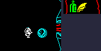
Two objects already carried ($82 (GFX_82) and $84 (GFX_84), their records emptied as a pick-up empties them), and the knight walking onto a third, $83 (GFX_83), in room $48; then SYMBOL SHIFT for three frames, and three more presses a few steps apart on bare floor. READ_PICKUP_KEY reads the key once a pass. On an object, PICK_UP: DROP_CARRIED puts down whatever is in the third slot, SHIFT_CARRIED moves the first two along, and REMEMBER_CARRIED puts the new one first and rubs it out of the room; DRAW_INVENTORY redraws the three slots on the scroll. On bare floor, the drop controller's PUT_DOWN does the same with nothing to put first -- so a press moves the queue along, and only what falls off the end is put down, at his feet. The slots, newest first, went [$82, $84, -] then [$83, $82, $84] then [-, $83, $82] then [-, -, $83] then [-, -, -]. One press does one thing: the key must be let go before it acts again.
Sprite frames drawn: $82 (GFX_82), $83 (GFX_83), $84 (GFX_84) (on the Sprites page: $80-$8E).
In the picture: $08 (20ms), $05 x4 (80ms), $06 x4 (80ms), $07 x4 (80ms), $08 x6 (300ms), $01 x4 (80ms), $02 x4 (80ms), $03 x4 (80ms), $04 x3 (100ms), ..., $0C x4 (80ms), $09 x3 (110ms), $0A x6 (200ms), $03 x4 (80ms), $04 x4 (80ms), $01 x4 (110ms), $02 x2 (70ms), $03 x8 (300ms): 81 pictures, 2.2s in all.
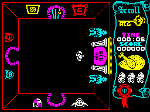
The three pieces of the A.C.G. key carried in the order ACG_DOOR wants -- $8C newest, $8E oldest -- and the knight in room $00 walking at the great door. With them the door is open and he walks through into room $8E, the passage; at the end of that pass MAIN_LOOP finds him there and jumps to SHOW_END_SCREEN, which prints CONGRATULATIONT (the game's misspelling), a line saying he has escaped, and the summary (DRAW_SUMMARY: the time, the score and the share of the castle seen), and waits in $8C4A -- 9.8s here from the end screen to the title. The whole screen is shown, read every fiftieth of a second. The scroll turns green in the passage: PAINT_PANEL colours it the room's ink complemented, and green where that would be black, as it is for a white room.
In the picture: 27 pictures, 10.3s in all.
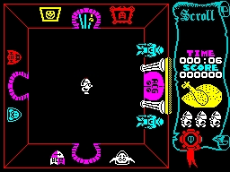
No spare lives and one unit of life force, in room $00. The drain's jump to LOSE_LIFE finds no lives and goes to GAME_OVER: the room is cleared, GAME OVER and the same summary printed, and the same wait -- 9.8s here -- before the title comes back. There is no sinking: the last life ends at once.
In the picture: 4 pictures, 9.8s in all.
Left out: walking through an ordinary door, which is a new room drawn and fifteen frames of the player walking in on his own; the locked doors and the clocks, bookcases and barrels, which open for the right key or character without anything to see but the way through; the title screen's flashing menu lines; and Dracula's wandering, which happens where nobody can see it. The pictures of the characters walking diagonally are the same sixteen frames, chosen by the larger of the two speeds. Nothing here was checked on a real Spectrum or in the emulator; all of it is the simulator's.